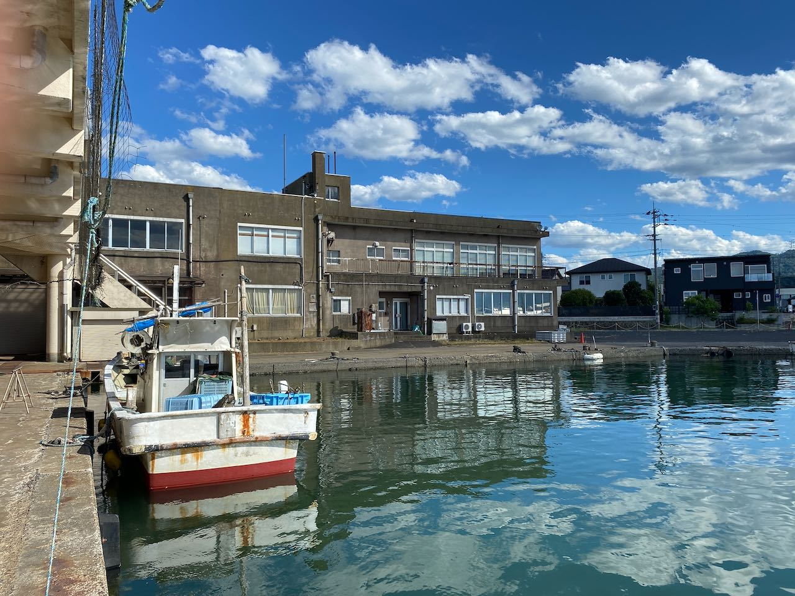
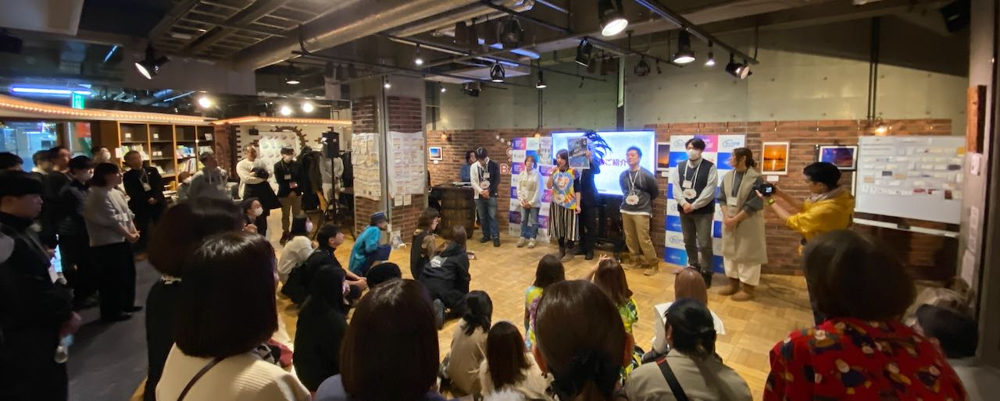

Our Philosophy
代表メッセージ
一過性のイベントで終わらせず、
最終的に地元が自走できるサポートまで伴走し抜く。
そうすることで、日本各地の持続可能な発展に貢献したい。

潜在価値の発掘
これまでに出会った各地の事例は、地域の可能性を考える上で「広い視点」を与えてくれました。ひとつの地域での成功事例で終わらせず、仕組みとして全国へ広げていきます。

地元に根付く支援
仕組みを当てはめるだけでなく、地元に最適な形で根付かせていくプロセスと、事業の継続性を重視しています。

自走への伴走
一過性のイベントで終わらせず、最終的に地元が自走できるサポートまで伴走し抜く。それがCBCの約束です。